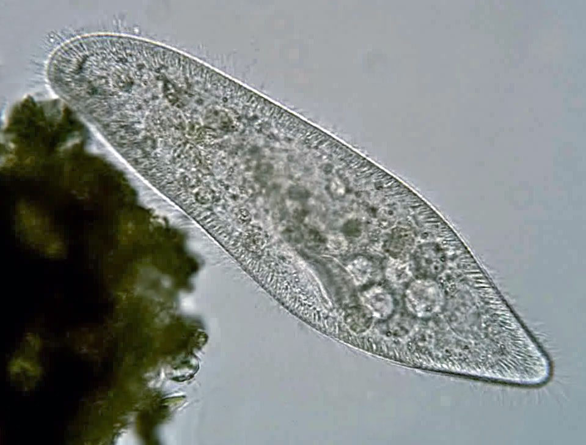

Інфузорія-туфелька
Інфузорія-туфелька – вид інфузорій , одноклітинних організмів із групи альвеолят. Іноді інфузоріями-туфельками називають інші види роду Paramecium. Трапляються в прісних водах, іноді в акваріумах. Свою назву отримала за постійну форму тіла, що нагадує підошву туфлі. Використовується для спостережень життя найпростіших на шкільних уроках біології, і навіть служить модельним організмом.
Зміст:
Опис
Зустрічається в будь-яких стоячих прісних водоймах з органічними речовинами, що розкладаються. Її можна знайти і в акваріумі, взявши проби води з мулом і розглянувши їх під мікроскопом. Дуже велике найпростіше розмір становить 0,5 міліметрів. Формою тіла нагадує підошву туфлі. Зовнішній щільний шар цитоплазми (пелікула) включає плоскі мембранні цистерни (альвеоли), мікротрубочки та інші елементи цитоскелета, що знаходяться під зовнішньою мембраною. Парамецій-ру Будова Інфузорії-туфельки. На поверхні клітини переважно поздовжніми рядами розташовані вії, кількість яких від 10 до 15 тисяч. Вони можуть розташовуватись через рівну відстань один від одного, а можуть бути згруповані в пучки. В основі кожної вії знаходиться базальне тільце, а поруч друге, від якого вія не відходить. З базальними тільцями інфузорій пов'язана інфрациліатура — складна система цитоскелета. У туфельки вона включає посткинетодесмальные фібрили, що відходять назад, і радіально розходяться поперечно смугасті філаменти. Біля основи кожної вії є вп'ячування зовнішньої мембрани - парасомальний мішечок. Між віями розташовані дрібні веретеноподібні тільця - трихоцисти, які розглядаються як органоїди захисту. Вони розташовані в мембранних мішечках і складаються з тіла та наконечника. Трихоцисти - різновид різноманітних за будовою органоїдів екструсом, наявність яких характерна для інфузорій та деяких інших груп протистів. Їхнє тіло має поперечну смугастість з періодом 7 нм. У відповідь на роздратування (нагрів, зіткнення з хижаком, додавання у воду небезпечних туфельок хімічних речовин) трихоцисти вистрілюють — мембранний мішечок зливається із зовнішньою мембраною, а трихоциста за тисячні частки секунди подовжується у 8 разів. Передбачається, що трихоцисти, набухаючи у воді, можуть ускладнювати рух хижака. Відомі мутанти туфельок, позбавлені трихоцист і цілком життєздатні. Загалом у туфельки 5-8 тисяч трихоцист. У туфельки 2 скорочувальні вакуолі в передній та задній частині клітини. Кожна складається з резервуару і радіальних каналів, що відходять від нього. Резервуар відкривається назовні часом, канали оточені мережею тонких трубочок, якими рідина надходить у яких із цитоплазми. Вся система утримується у певній ділянці цитоскелетом з мікротрубочок. У туфельки є два різні за будовою та функціями ядра — диплоїдний мікронуклеус (мале ядро) округлої форми та поліплоїдний макронуклеус (велике ядро) бобоподібної форми. Клітина інфузорії-туфельки складається на 6,8% із сухої речовини, з якої 58,0% – білок, 31,4% – жири, 3,6% – зола.
Рух
Здійснюючи віями хвилеподібні рухи, туфелька пересувається (пливе тупим кінцем вперед). Вія рухається в одній площині і робить прямий (ефективний) удар у випрямленому стані, а зворотний - у вигнутому. Кожна наступна вія в ряду робить удар з невеликою затримкою порівняно з попередньою. Пливучи в товщі води, туфель обертається навколо поздовжньої осі. Швидкість руху – близько 2–2,5 мм/c. Напрямок руху може змінюватися за рахунок згинання тіла. При зіткненні з перешкодою напрямок прямого удару змінюється на протилежне, і туфель відскакує назад. Потім вона деякий час «розгойдується» туди-сюди, а потім знову починає рух уперед. При зіткненні з перешкодою мембрана клітини деполяризується, і клітину входять іони кальцію. У фазі «розгойдування» кальцій викачується із клітини.